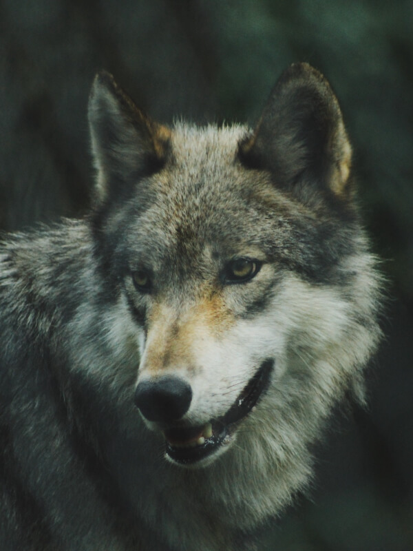

Animais Fantásticos
-

-

- 
-

Raposa
Raposas são pequenos a médios mamíferos onívoros pertencentes a vários gêneros da família Canidae. As raposas têm o crânio achatado, orelhas triangulares verticais, focinho pontiagudo e ligeiramente arrebitado e uma cauda longa e espessa.
Doze espécies pertencem ao grupo monofilético de "raposas verdadeiras" do gênero Vulpes. Aproximadamente outras 25 espécies atuais ou extintas são parte do grupo parafilético das raposas sul-americanas ou do grupo periférico, que consiste na raposa-orelhas-de-morcego, raposa-cinzenta e raposa-das-ilhas.
As raposas vivem em todos os continentes, exceto a Antártida. De longe, a espécie mais comum e difundida de raposa é a raposa vermelha (Vulpes vulpes) com cerca de 47 subespécies reconhecidas
Esquilo
O esquilo (Sciurus vulgaris) é um mamífero pertencente à família Sciudidae e à ordem rodentia. Sua família comprende os esquilos arborícolas, terrestres, voadores e as marmotas, entre outros. Dentre os esquilos arborícolas e terrestres há mais de 230 espécies e no grupo dos esquilos voadores estão incluídas 43 espécies conhecidas. O esquilo mais comum, o europeu, possui pelagem avermelhada, cauda longa e tem pelos compridos nas orelhas.
O tamanho deste animal é variável, o menor deles é o esquilo pigmeu africano, que mede 13 cm de comprimento. Os maiores são os esquilos gigantes da Ásia, seu comprimento pode chegar a 90 cm.
Este animal pode ser encontrado no mundo todo, menos na Austrália. Normalmente vivem em bosques de coníferas e caducifólias (plantas que em determinada época do ano perdem suas folhas). Embora existam espécies que podem ser encontradas no deserto ou na taiga. Para viver nestes lugares, os esquilos passaram por adaptações e desenvolveram estratégias que lhes permitem suportar as temperaturas extremas que caracterizam estas regiões.
Urso
Os ursos são mamíferos membros da família ursidae, junto com os pandas. Com oito espécies em cinco gêneros (Ursus, Tremarctos, Melursus, Helarctus e Ailuropoda) é uma família pouco diversa. São eles: Urso de Óculos, Urso Beiçudo, Urso-do-Sol, Urso Negro-Asiático, Urso Negro-Americano, Urso Polar, Urso Pardo e Urso Panda. São animais sempre grandes e geralmente onívoros, existem em todos os continentes, exceto na Austrália e Antártida.
É uma família que vive nos mais diversos habitats terrestres, desde as regiões geladas do Hemisfério Norte, a florestas temperadas, florestas tropicais, montanhas, pastagens e regiões áridas. Apesar da ocorrência nestas regiões áridas, eles precisam de proximidade com água e são mais diversos nas regiões temperadas e boreais.
Lobo
Os lobos são mamíferos carnívoros, pertencentes à família canidae, a mesma de cães, raposas, etc. É parente bem próximo do cão doméstico (Canis lupus familiaris) e acredita-se que este tenha se originado através da domesticação de lobos cinzentos. Pertencentes ao gênero Canis, há três espécies vivas: Lobo cinzento (Canis lupus) , Lobo vermelho (Canis rufus) e lobo etíope (Canis simensis), as outras são classificadas como subespécies.
É um originário da Era do Gelo, mas atualmente, devido à pressão de caça, fragmentação de habitat e mudanças ambientais, encontra-se em poucas áreas do EUA, Canadá, Alasca, Europa e Ásia.
Nas regiões mais frias (Norte) são maiores e nas regiões mais quentes (Sul) vão diminuindo. Machos pesam em média 50 kg e fêmeas 45 kg, apesar de haver registros de um lobo com mais de 70 kg na América do Norte. Um lobo-cinzento mede de 1,3 a 2,0 metros. As garras estão sempre expostas, diferente dos felinos, e podem alcançar 70 km/h quando caçam. Possuem glândulas odoríferas entre seus dedos, deixando sua marca para outros lobos, por onde passam.
Babuino
Babuíno (do francês babouin) é a designação genérica para antropoides cercopitecídeos do gênero Papio e afins, caracterizados pelo focinho pontudo, caninos grandes, bochechas volumosas e calosidades nas nádegas. É um animal semi-quadrúpede da ordem dos primatas que mede até 120 centímetros de comprimento. Vive na África e seu habitat natural é nos campos abertos (savana, pastagens ou terrenos rochosos).
Ao contrário dos macacos, os babuínos passam a maior parte do tempo no chão. Suas caudas não são preênseis. Os babuínos são grandes lutadores e demonstram pouco medo de outros animais, inclusive seres humanos. Todos têm hierarquias fortes e complexas dentro dos grupos familiares.
Leão
A maior parte dos leões que hoje vive na natureza são encontrados nas savanas da África e demais regiões semi-desérticas. Ele já foi extinto de muitas áreas de florestas da Ásia e Europa.
Eles vivem em grupos de até 40 indivíduos, sendo em sua maioria fêmeas, lideradas pelo macho alfa.
DAs atividades no grupo são divididas entre os seus integrantes. Enquanto as fêmeas são responsáveis pela caça e cuidam dos filhotes, os machos garantem a proteção do grupo.
A maior parte do tempo dos leões é destinada ao descanso, apenas durante 5 horas do dia ocorrem as atividades de caça e em grupo. O restante do tempo serve para dormir, descansar e economizar energia.
FAQ
- O que é um animal silvestre?
- É aquele que vive na natureza e não tem (ou não deveria ter) contato com os humanos. Quando tirados da natureza, os animais silvestres sofrem, podendo ter dificuldades para crescer e se reproduzir, por exemplo.
- Qual a diferença para um animal exótico?
- Exótico é aquele que não pertence à fauna do país em que se encontra, como, por exemplo o furão (ou ferret), que teve origem no tourão - um animal silvestre europeu -, mas que é comumente comercializado no Brasil. Ou seja, os animais que são exóticos para nós no Brasil podem ser animais silvestres nativos em outras partes do mundo.
- Animal selvagem é o mesmo que animal silvestre?
- Sim, animal silvestre é também um animal selvagem – definido como aquele que vive em seu habitat natural, não é domesticado e reage se distanciando ou fugindo das pessoas. Alguns ainda podem apresentar comportamento agressivo e dificuldade de viver em contato com humanos.
- Como proteger animais silvestres?
- Estar ciente de nossas ações quando saímos de férias ou fazemos um passeio pela natureza é essencial. Devemos seguir todas as indicações que nos são dadas quando estamos em áreas protegidas. Ou, se formos a um local que não possui sinalização, devemos sempre buscar o cuidado com o local e as espécies que o habitam.


Números
Contato
- gearqq@hotmail.com
- +55 (44) 99922-7595
- Rua do Conde, nº 21
- Rio de Janeiro - RJ
- Doe 0 bitcoin para nos ajudar
- Seg à Sex das 8 às 18